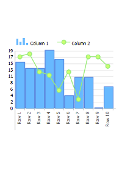
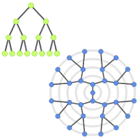
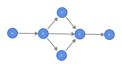

Marb
Marb is a chart library for Qt applications. The GUI components in Marb are based on the QAbstractIemView class from Qt framework.
Marb doesn't need anything else than Qt (version >= 4.7).
Marb is an open source project under GPL license.
Marb contains three modules: Charts, Trees and Graphs. Each module contains several view to represent data stored in a model.
|  |  |  |
ChartsCreate curves, bar and pie charts |
TreesViewes for tree models |
GraphsAnimated viewes for graphs |